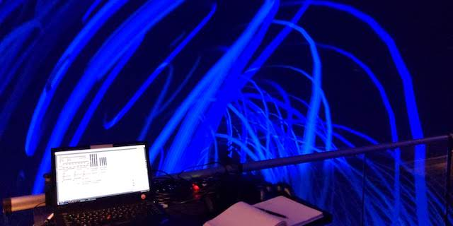
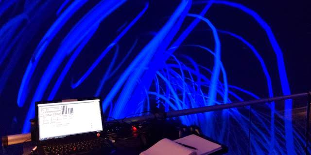

Wavefront
- Realtime audiovisual, Custom C++ software
- Full immersice projection with 26 projectors
- 54.1 spatialized Channel audio
Wavefront is a full immersive audiovisual presented in AlloSphere. Three dimensional wavelets are designed with the inspiration from ocean waves. Then a large number of them are spawned in space, creating a complex scenary with the full surround visual and spatialized sound.

 
